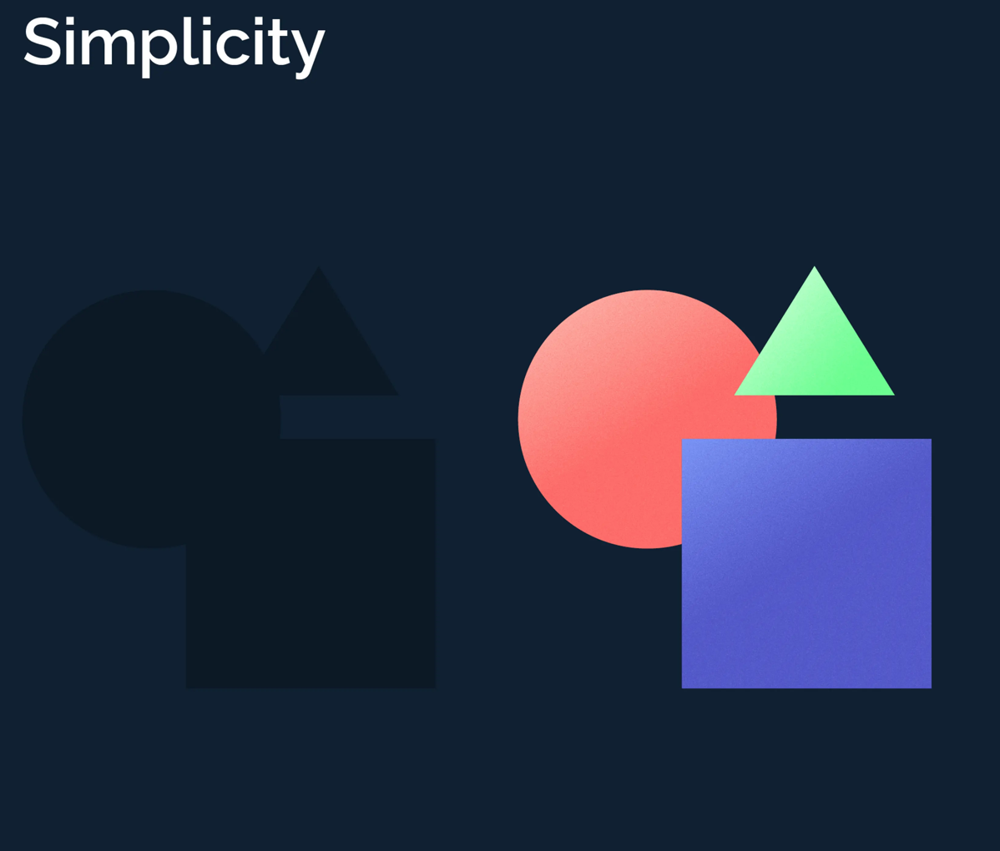

Principio de continuidad
Hace referencia al seguimiento de un patrón o dirección de elementos que tienden a agruparse aunque estén interrumpidos entre sí. Por ejemplo, en la siguiente imagen podemos ver círculos que siguen una línea curva cruzada entre sí. Sin embargo, no los vemos ni como círculos individuales ni llegamos de primeras a seguir la línea en otra dirección. Los detalles que mantienen un patrón o dirección tienden a agruparse juntos, como parte de un modelo. Es decir, percibimos elementos continuos aunque estén interrumpidos entre sí. Esto es debido a que las figuras se muestran de manera incompleta, inconclusas, como abreviaturas o como esquemas de fácil interpretación.
Principio de semejanza
El principio de semejanza de la Gestalt se puede explicar como todos aquellos elementos de diseño que parecen similares de alguna manera, por ejemplo, si comparten color, forma o tamaño, se perciben como que están relacionados. Los elementos que parecen diferentes se perciben como pertenecientes a grupos separados.

Principio de punto focal
Este principio establece que nuestro ojo capta aquellos elementos que son diferentes de los elementos que los rodean.
Principio de cierre
Cuando percibimos una figura que no está cerrada o delimitada por líneas, nuestra mente tiende a transmitir una sensación de cierre o forma completa. Según la Teoría de la Gestalt, las formas cerradas se perciben como formas más estables.
Principio de proximidad
Hace referencia al agrupamiento de elementos en base a la distancia. En la siguiente imagen se presenta la misma figura con diferentes espacios entre ellas. No obstante, al visualizarlas tendemos a agruparlas en dos: por un lado la imagen A forma un grupo de círculos bisimétrico y, por otro lado, un grupo de circulos divididos por columnas de dos: en esencia, dos grupos de muchos círuclos (grupo) y no un circulo como tal (individuo)
Principio de direccion
Los elementos que se mueven en la misma dirección se perciben como más relacionados que los elementos que están quietos o que se mueven en diferentes direcciones. Independientemente de la separación en la que se encuentran los elementos o qué tan diferentes parezcan, si se percibe movimientos, se percibirán como relacionados.
Principio de simplicidad
a ley de la simplicidad es una de las más importantes para los diseñadores porque nos dice que la mente siempre busca simplificar lo más posible las formas que percibe para relacionar mejor los significados que hay entre unas y otras. Algo así como reducir una fracción a su expresión más sencilla para simplificar la resolución de un problema.
